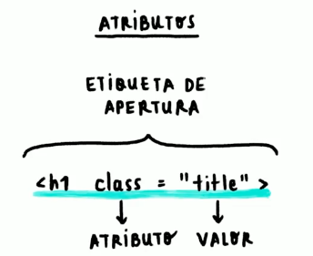

En ella meteré todos los conociminetos que aprendí en la clase de Frondend de Platzi y demas foros.
el link es el siguiente:
curso de platzi쯈ue es HTML y CCS?
ver video de platziResumen de video:

HTML: Hypertext Markup Lenguage
Es la estrucutra del los selectores
mas info Clase Platzinota: para escribir los signos <> y que no los leyera como codigo hay que ponerlos juntando estas letras & + l + t + ; para < y & + g +t + ; para> .
Elements:
Mas etiquetas ...">HTML utiliza "marcas" para etiquetar texto, imágenes y otro contenido para mostrarlo en un navegador
Web. Las marcas HTML incluyen "elementos" especiales como: <head>,
<title>,
<body>,
<header>,
<footer>,
<article>,
<section>,
<p>, <div>,
<span>,
<img>,
<aside>,
<audio>,
<canvas>,
<datalist>,
<details>,
<embed>,
<nav>,
<output>
(en-US), <progress>,
<video>,
<ul>, <ol>, <li> y
muchos otros.
Se usa titulos, existe el h1, h2...h6 Entre menor sea el numero menos tamaño tiene
Ejemplo
arriba pueden ver la palabra ejemplo. y como fue escrita en html
<ul>...</ul>: Unordered List
Se usa para listas no ordeandas
mas información- Eje. ul1
- Eje. ul2
- Eje. ul3
<ol>...</ol>: Ordered List
Se usa para listas ordeandas (con numeros)
mas información- Eje. ul1
- Eje. ul2
- Eje. ul3
a los elementos tienen "Atributos":
son los que conectan los elemntos con los estilos de CSS
anidamiento( ó indentantion en ingles)
basicamente los anidamientos es la forma en la que los elemntos estan dentro de otros. Esto sirve para crear una gerarquia entre las lineas de código, lo cual permite que se pueda leer mas facíl por nosotros.
Gracias al indentation se puede entender como están constituidos los bloques de código
Elementos Vacios
Basicamente son elementos que no requieren cierre. ejemplos son la función <img...> con la que hemos puesto literlamente todas las imagenes que estan aquí

anatomia de HTML

se crea automaticamente al escribir la función HTML:5
HTML SEMÁNTICO
Clase Platzibasicamente todo lo podriamos hacer con la función "div", sin embargo esto no nos conviene por que almomento de entender el código se haria dificil. Entonces el HTML semantico sugier que utilicemos los selectores y etiquetas necesarios para cada función
Se sugiere que las cajas o bloques se aniden así:
Etiquetas de HTML más usadas
Clase Platzi Mas etiquetas- Layout:
- Enlace:
- Textos:
- Imágenes y video:
- Formulario:
Es el diseño de la pagina ya que contiene la estructura principales de la página.
Links que redireccionan al usuario a otros sitios webs.
son los tipos de textos.
se usa para agregar caracteriscias al texto.creo que es full obvio así que no lo explicaré
Se utilizan para pedirle información al usuario.
No hemos usado esto nunca antes así que vamos a explicar en detalle:
CSS: Cascading Style Sheets
Anatomia de CSS
Se coloca el elemnto luego se abre la llave, se describe una caracteristica y se cierra la llave
- background
- font
- color
ejemplos de aplicación con selectores basicos:
Ejemplo selector básico
primero creamos el HTML
Luego creamos el CSS
Resultado
Clase PlatziEn esta imagen lo unico de CSS que se tiene es el background de color "tomato" para el div y el background de color CadetBlue para * (universal)
TIpos de Seletores:
Clase Platzi COLORES CSSSe usan para dar estilos a elementos relativos con los otros:
Ejemplo:
- div p: Significa que se aplica a todos los p que se encuentren dentro de div
- div > div: Se aplica solo a los div que esten directamente dentro de un div. (Hijo directo)
- div + section: Se aplica solo a los divs que esten despues de un section
- div ~ p: Todos los hermanos p de div se les aplica.
Tipos de selectores: pseudoclases y pseudoelementos
Clase PlatziPseudoelementos:
nos permite interactuar con el usario, por ejemplo, si el usaurio le da click a un boton, el boton hace una animación de que se unde, o que cuando se pase el mouse por el icono este se ilumine.
ejemplos:
- :active
- :focus ejemplo de focus
- :hover
- :nth-child(n)
cuando se clickea un selector este reaccionará. Ejemplo el titulo ":active" cambia a verde cuadno lo undes.
otro ejemplo es "a"
cuando undes este link se activa un cambio de color, y se manda automaticamente al linkcuando se pase el mouse por el selector este reaccionará. Ejemplo el titulo ":hover"

nos permite hacer que el estilo se aplique a cierto elemento
mas infoPseudoelementos:
Clase Patzise aplican a partes de un parrafo o texto, no a todo
- ::after
- ::before
- ::first-letter
- :placeholder
funciona para poner cosas despues de un elemento. Por ejemplo el elemento azul cielo a continuación, la caja naranja se puso con pseudo elemento after.
Look at the orange box after this text. aqui puedes ver el detalle de esofunciona igual qeu el after, pero se aplica antes del texto.
Por ejemplo voy a poner un emoticón antes de este texto.
para ello le puse la clase de "ejemplo_before" al texto y luego le lo siguiente en CSS:
Miren como puse esta primera letra con otro tipo de font
como se puede observar hay un margen rojo alrededor del cuadrado blanco, el estilo solo se aplica al texto y cuadro que aparece antes de qeu el usuario escriba en el input
Cascada y especificidad en CSS
Cascada:
el orden del codigo importa por que el codigo se lee en casacada
especificidad:
cuando hay conflicto de estilos html termina aplicando el que tenga mayor "especificidad" o importancia
se utilizan reglas para ver quienes primas sobre otro.
con specifitity te puede ayudar a calcular la especificidadDISPLAYS!!!
alfin la pagina se dejará de ver tan horrible jeje
clase de platziel display es el tipo de visualización que tienen los elementos, existen:
- Inline
- Block
- inline-Block
- Flexbox & Grid
- FLexbox guia completa de flexbox
- Grid
cuando son en linea "inline", significa que el background solo se aplica hasta donde lleguen los caracteres
aquí usamos un div que usualmente funciona como bloque
Se le dice en bloque por que abarca toda la pantalla, va de izquierda a derecha.
Uno tambien puede cambiar el tamaño del bloque, por ejemplo si quiero que tenga un ancho de 200 px y un alto de 100 px, puedo agregarselo a su clase.
en el siguiente ejemplo se aplican las mismas caracteristicas del ejemplo anterior
entonces tiene caracteristicas de los dos: es un elemento en linea pero tiene caracteristicas de bloque.
estas dos son muy importantes, si quieres puedes ver el detalle:
curso de felxbox y Gridsirve para ubicar elementos en la pantalla